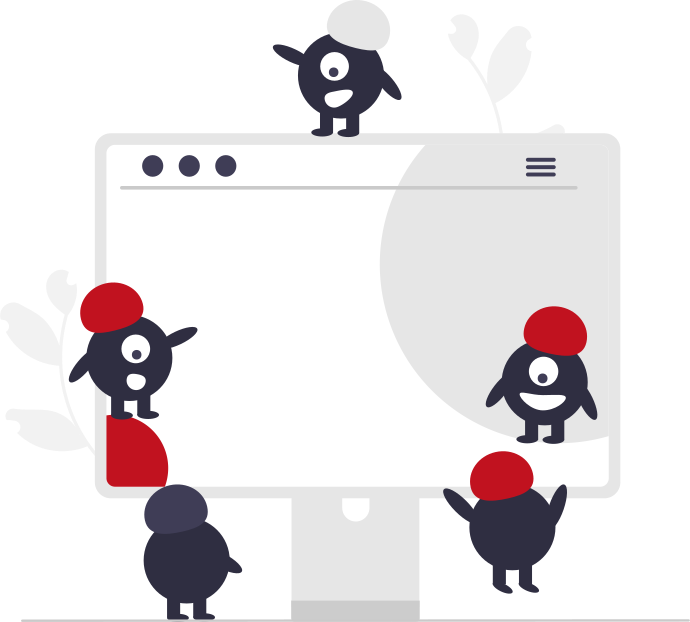

BIENVENIDO A PC Hospital
Somos una Empresa dedicada a la Reparación y Servicio Técnico. Con más de 10 años de experiencia en Servicios de Reparación, nuestros técnicos se capacitan continuamente debido a el avance de nuevas tecnologías en materia de electrónica, para poder así brindar un buen servicio no solo en calidad sino también en responsabilidad en todos nuestros trabajos realizados. Contamos con un laboratorio propio con equipamiento de alta precisión, brindando servicio no solo a clientes particulares sino también a Empresas y a otros servicios técnicos del gremio.
Beneficios
Nos especializamos en la reparación de PC de escritorio, notebooks, netbooks, ultrabooks etc. Tenemos amplia experiencia en todo tipo de reparaciones, solucionamos problemas de bisagras incluso si no se consigue el repuesto, lentitud, equipos que calientan, etc.
Herramientas de Última Generación
Contamos con taller y laboratorio electrónico propio, eso nos permite reparar motherboards a nivel electrónico sin derivar el trabajo y gracias a eso nuestros tiempos de entrega son muy cortos y brindamos garantía escrita de la reparación.
Equipo de Especialistas
Disponemos de un grupo de especialistas que trabajan con los clientes brindando servicios en distintas áreas del país y diversos sectores del negocio.
Asesoramiento Personalizado
Ofrecemos atención pre y post-venta. Si tiene alguna consulta sobre su PC o laptop no dude en hacerla. Luego del servicio técnico de PC cualquier duda o consulta será resulta sin cargo alguno.
¿Cómo trabajamos?
Nuestro servicio técnico, en su mayoría, se resuelve en el domicilio del cliente. De no ser posible, por cuestiones técnicas, recogeremos su ordenador, lo reparamos y lo devolvemos a su domicilio.
Tenemos como objetivo ofrecerte un servicio técnico integral que pone en primer lugar tus intereses y los de tu computadora. Como técnicos pensamos en tu seguridad y por ello contamos con Garantía en el 100% de nuestros trabajos. Del mismo modo pensamos en tu confianza por lo que también contamos con Presupuesto sin cargo y un Asesoramiento personalizado.
01
Consulta
Contáctanos a través de nuestros distintos medios para que puedas explicarnos tu situación.
02
Coordina
Pacta una cita para que puedas recibir una visita de nuestros técnicos. Todo dentro de tus comodidades para que puedas recibirlos sin problemas.
03
Diagnóstico
Nuestros técnicos evalúan su computadora y le presupuestan el costo del arreglo.
04
Reparación
Basándonos en el diagnóstico, un tecnico se encarga de arreglar tu computadora realizando la solución apropiada.
Nuestros Clientes
Eston son algunos nuestros clientes que han experimentado nuestro servicio y lo recomiendan.
Contáctanos
Ciudad. Prov. Pais.
 Calle Falsa 123
Calle Falsa 123
 mimail@mail.com
mimail@mail.com
 Tel: +54-1112121212
Tel: +54-1112121212
Santiago Rodriguez
 Calle Falsa 123
Calle Falsa 123
 mimail@mail.com
mimail@mail.com
 Tel: +54-1112121212
Tel: +54-1112121212